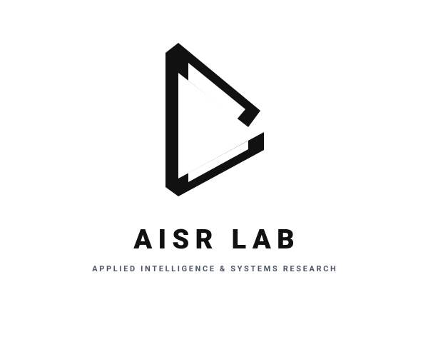

Applied Intelligence & Systems Research Lab
AISR Lab studies the operational reality of artificial intelligence: how autonomous workflows, structured context, and local models survive contact with legacy software, messy data, and human oversight.
While modern AI research often evaluates models in sterile benchmarks, our work focuses on the operational failure points—state-loss in cross-system pipelines, context drift, and the engineering required to build durable, private-first tools.
Core Research Thrusts
- Context Architecture & Domain Schemas Formalizing data boundaries and ontological structures to anchor model generation in specialized environments.
- Workflow Interoperability & Failure Recovery Investigating state retention and error recovery when autonomous pipelines bridge disparate, cross-platform software.
- Evaluative AI & Human-in-the-Loop Systems Designing objective evaluation architectures for scoring, institutional validation, and authentic assessment.
Selective Advisory & Architecture Reviews
Alongside academic teaching and research, the Lab accepts a small number of outside technical advisory engagements each semester.
Work is strictly limited to independent architecture reviews, pipeline failure-state audits, and context engineering strategy for engineering teams building non-trivial AI workflows.
director@aisrlab.org